24 October 2026 · Approved with calls 14 and 15; call 16 open · 10 frames. The owner, on 24 October 2026, with Netflix’s Home on a phone and a tablet: the boxes of different sizes are great, with emphasis on some titles. Netflix keeps each row one size and changes the size from row to row. P15’s first draw mixed sizes inside a row, which is what looked unkempt, and P15 rule 10 answered it with one tile everywhere; P16 keeps every row tidy and gives the page its emphasis back. The samples are P15’s. Na Love or Juju is Arke’s world as published; its poster is the book cover in the middle of its published cover. Arke’s covers are wide today, so a poster’s Tall cover is call 14. Approved the same day with calls 14 and 15 (the owner: upright is the industry’s norm, and a page can mix and match), and the pill asked to be seen: P16h – P16j.
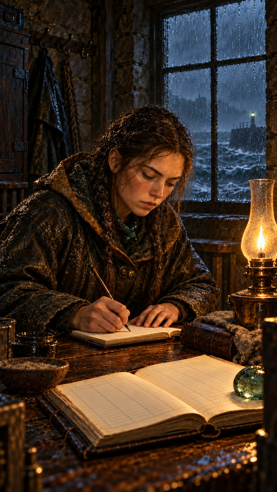
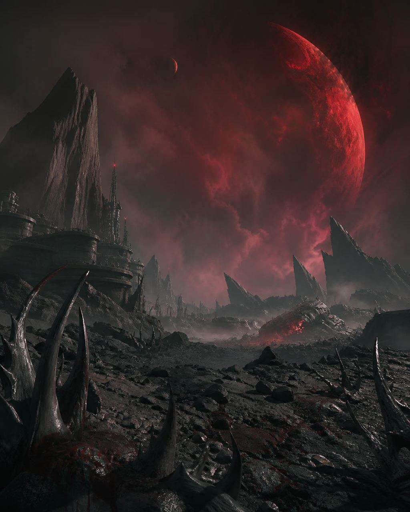
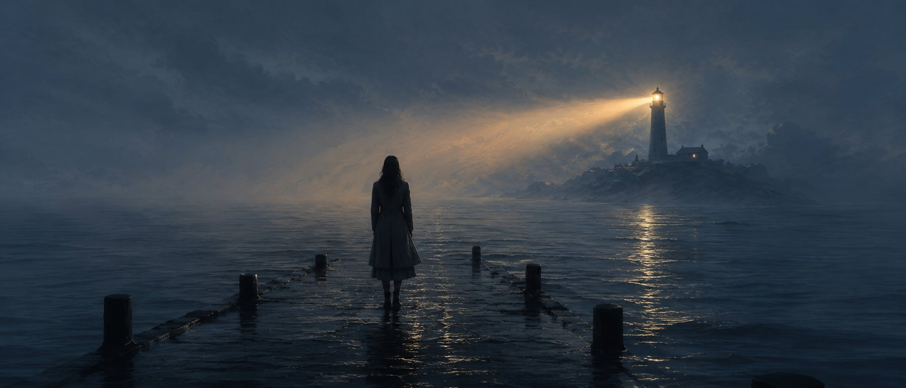
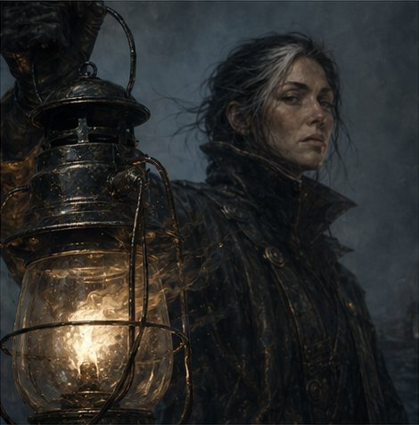
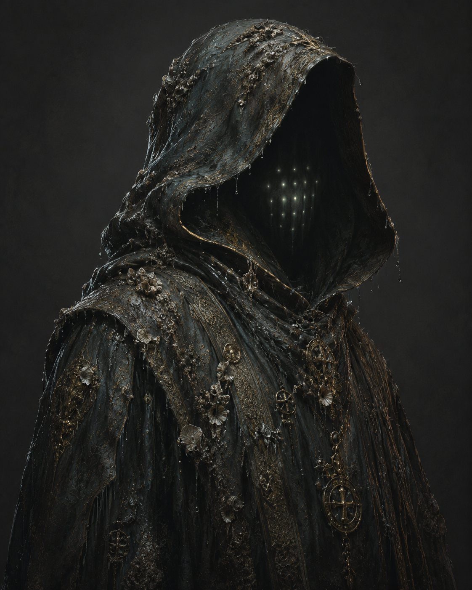
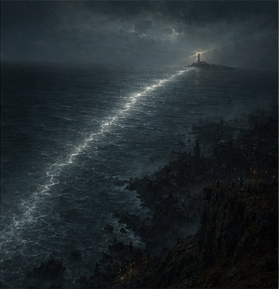
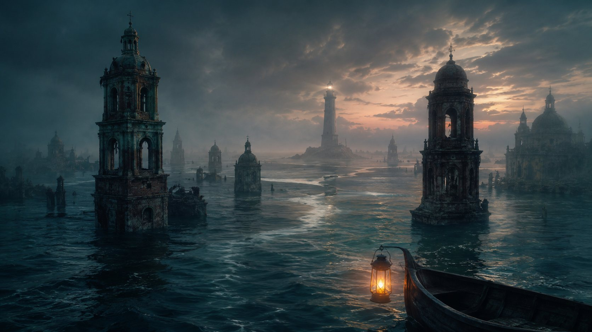
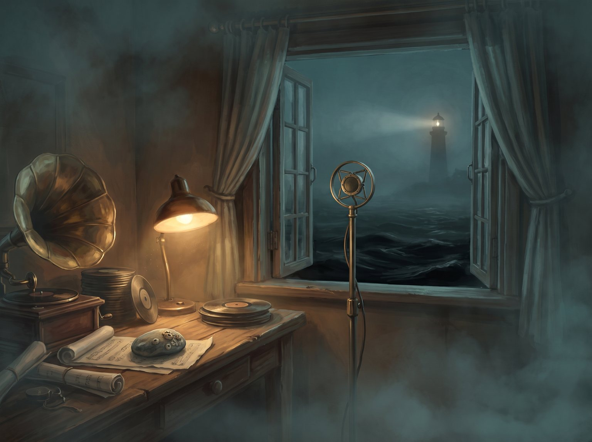
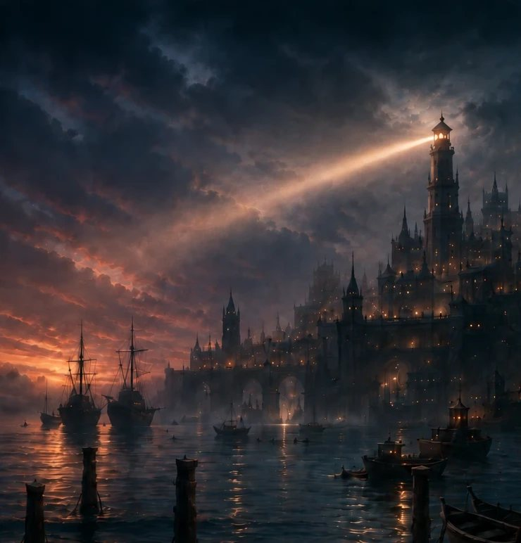
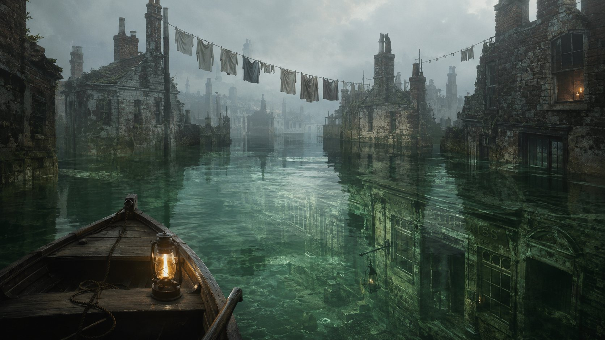
1 · A row is one size. Each row is one size and one shape, whatever it holds; a page mixes rows, and the size says how much a row matters (P16a – P16g). Five sizes, phone · Fold: the feature; posters, 2:3, 172 × 258 · 260 × 390; wide tiles, 16:9, 240 × 135 · 300 × 169; small posters, 2:3, 112 × 168 · 160 × 240; the band. This replaces P15 rule 10. Home keeps its Continue cards (P1 rule 4) and Library its world cards.
2 · The feature. Discover opens on one production (P16a): 358 × 476 on a phone, upright, from its Tall cover; 848 × 424 on a Fold, from its Wide cover, the words at the left (P16f). New and the chapter, the title, the kind and world, and one press: Install · 1.9 GB, or Play · Chapter 24 once the world is installed. The card opens the world’s page at the production. The feature is drawn under All only.
3 · Posters. 2:3, from the production’s Tall cover: Stories (P16b) and a world’s Listen and Read (P16d), where audiobooks and books sit. A production without a Tall shows its Wide cover whole over its own blur — Whispers from the Void, Undertow — never cut.
4 · Wide tiles. 16:9 with the title and kind under, as P15: New chapters, a world’s Watch and Play, and Places (P16b, P16e). A chapter, a film or a place is a moment, and a moment is made wide.
5 · Small posters. 2:3: Teasers (P16c) and a world’s Characters (P16e). A character shows its portrait uncut, where P15 cut faces to 16:9. A picture or clip shows its Tall if it has one (P14), else its Wide over its blur. No portrait shows initials; one that waits shows After Chapter 9.
6 · The band. One world across the page (P16c, P16g): its key art blurred behind, on the media colours whatever the theme; the key art small, the name, productions and size, Install, the logline in two lines; then its productions and characters as small posters. One a page, after Teasers.
7 · Which feature, which band. Named in Arke’s list, one line each (call 15). With neither named, the feature is the newest release and the band the newest world.
8 · Words. Labels only: the title and kind under every tile and poster, the feature’s on its picture; Install, Play, New and chapters as data.
9 · The pill. Drawn for call 16 (P16h – P16j): the same five tabs as a pill floating over the page, 358 × 64 on a phone and 520 wide on a Fold, 24 above the foot, the current tab in a capsule. The page runs under it to the foot and fades into the page’s ground. A playing chapter’s dock floats above it (P16i). On a Fold the pill takes the rail’s place, and the page takes the full width (P16j). Until it is chosen, the bar and the rail stand (P1 rule 3, P6e).
Try next: “Discover under Listen” · “the feature for an installed world” · “Home with a feature”
24 October 2026 · Approved · 12 frames. The owner, on 24 October 2026: should Worlds become Discover, showing worlds, their productions and other things made for them; and a world may release its story a chapter at a time to bring its audience back, so how does the Player show that? And: a world’s page with more than one kind of production, a micro drama among them. Drawn on the five calls approved that day: Discover is what you can get and Library what you have; Discover leads with productions and new chapters; teasers are the author’s choice; a new chapter comes on its own over Wi-Fi; a notification is the phone’s own, per world. Legend of Dumah, The Red Quiet and Embers of the Fallen are Arke’s worlds on Available; The Undersong’s six productions are P1d’s sample. Chapter dates, schedules and episode counts are samples. The author’s half — releasing a chapter and choosing teasers — is Studio 236.
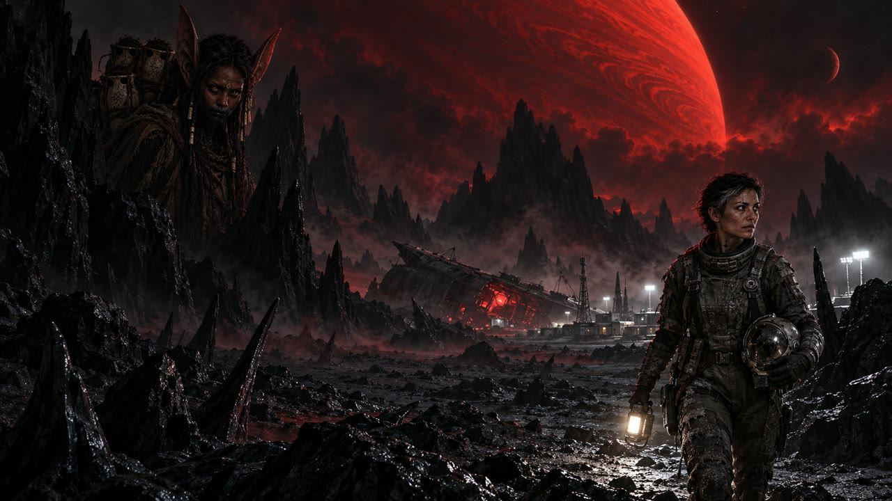
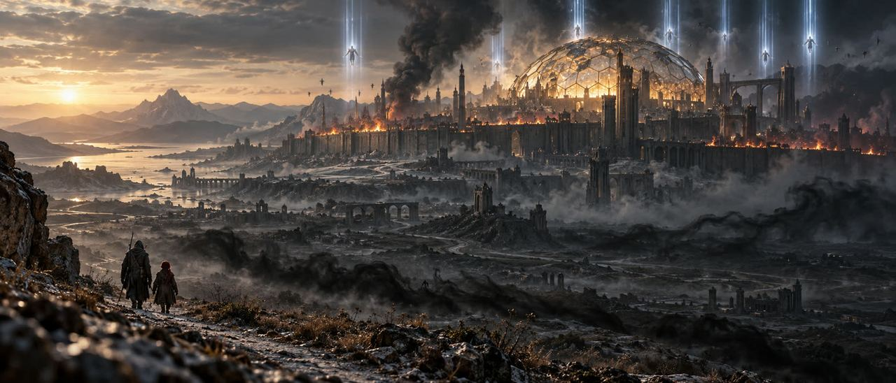
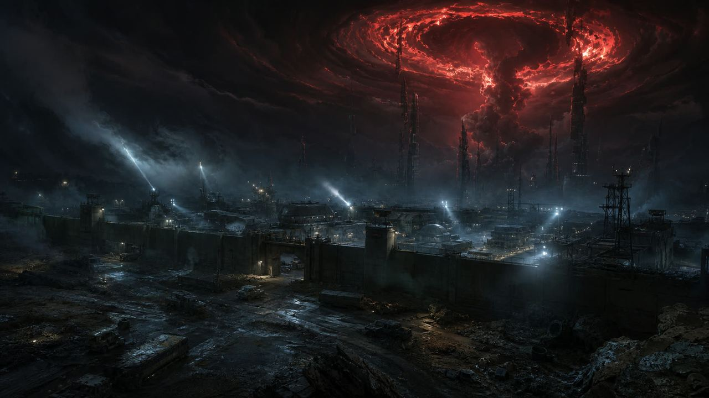
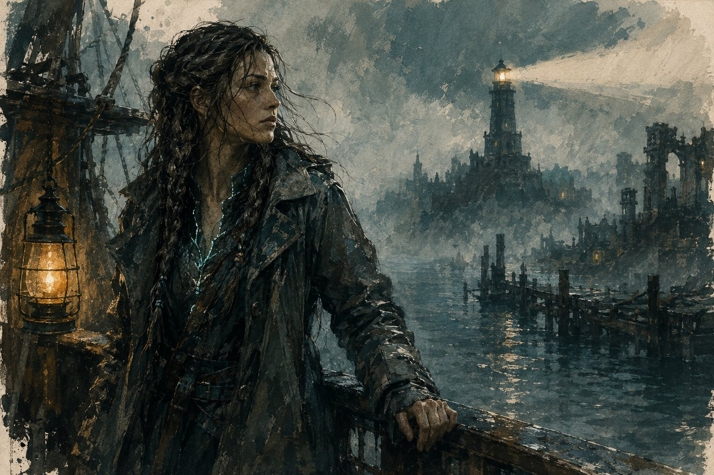
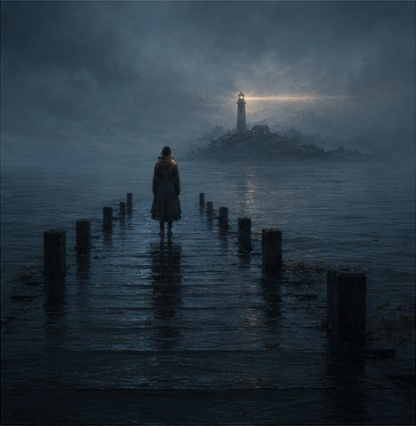
New42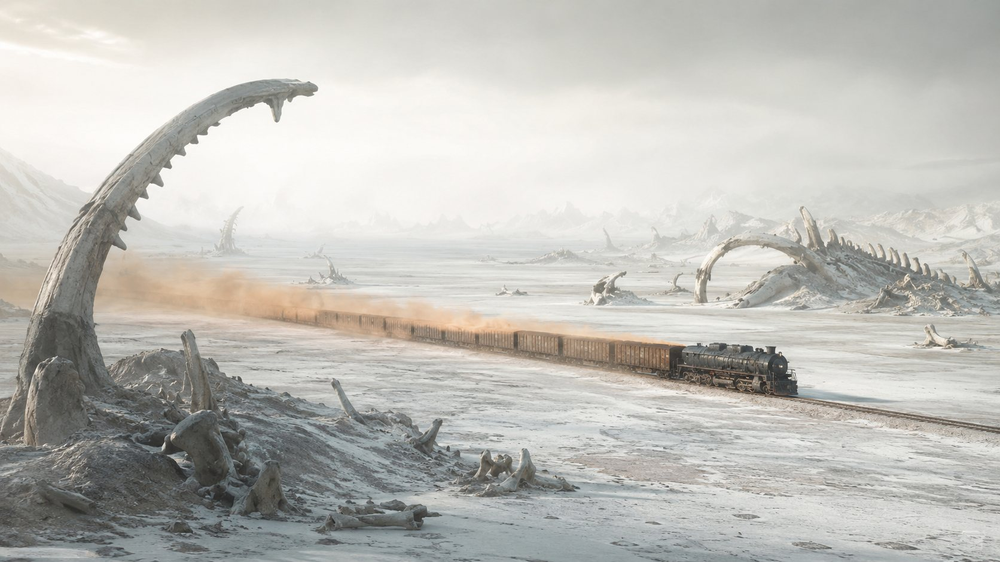
1 · Discover is a tab. The tabs become Home · Discover · Library · Downloads · You: Discover takes Worlds’ place (P11 rule 1 amended) and is what Arke offers, installed or not (P15a). Library is what is on the phone: installed worlds as cards first, each with New or Update, then added files as P8, under Discover’s chips (P15h). A world’s page is one page from either. P13a’s Check for updates press moves to Discover’s header.
2 · Stories first. Discover’s chips are All · Listen · Watch · Play · Read; then New chapters, Stories, Teasers and Worlds (P15a, P15b). A production’s tile names its kind and its world, and opens the world’s page at that production. An installed world stays in Discover; its meta line says In Library. On a Fold, the rail and the same rows, wider (P15l).
3 · A world’s kinds. A world’s page groups its productions by how they are taken (P15c, P15d): Listen (audiobook, audio drama), Watch (film, series, micro drama), Play (interactive movie, visual novel), Read (book). A production both heard and read sits under Listen. Each head carries its count; a group with nothing is not drawn. A micro drama takes the same tile as a film; its upright episodes are on its own page (P15f). The guide (P11c) follows the groups.
4 · Teasers. What the author picks in the Studio’s Publish, up to six a world: a character or place public from the start, never one that waits for a chapter (P11 rule 7); a picture; or a clip of up to 30 seconds. A picture or clip shows to anyone whatever its chapter, which is the author’s call (Studio 236 rule 4). A character or place opens its page (P11d, P11e); a picture opens full screen; a clip plays muted in the row and with sound when opened. Each leads to its world.
5 · A world in parts. A world’s package becomes its base — the guide, the key art and each production as first published — and one part per release, each pinned in Arke’s list by its SHA-256 as a package is (P9 rule 1). Install fetches the base and every part.
6 · A new chapter arrives. When the list names a part an installed world lacks, the phone fetches it on its own and adds it beside what is there: nothing being played changes. Wi-Fi only (P6b) applies; Downloads lists it under Worlds (P15k). A new edition (P12b) still waits for Update (P12 rule 6 holds for editions; parts only add).
7 · New. A chapter or episode that arrived since its production was last opened carries New: on its row (P15e), its tile, its world’s card in Library, and on Continue once the one before it is finished (P15g). Opening it clears it. Discover’s New chapters is every world’s releases of the last 14 days, newest first; Home’s is the installed worlds’ only.
8 · The author’s schedule. A production may carry its author’s schedule: a day, Fridays, and the next date. It is drawn as written — under the meta, and as a dashed last row, Chapter 4 · 30 Oct (P15e), or Next 26 Oct (P15f). A date that passes with no release drops it, so nothing shown is stale.
9 · Notify. Per world, off until turned on in the world’s ⋯ (P15j); the first one asks the phone’s permission. It comes from the phone’s daily check of Arke’s list (P12 rule 1), so up to a day after the release, names the world, the chapter and the production, and opens the production (P15i). No account and no server.
10 · One tile. Every row in Discover, Home and a world’s page is one tile, 16:9, 240 wide on a phone and 300 on a Fold — the width of a world’s card in a row (P15g, P15l) — whatever it holds: a chapter, a production, a teaser, a character (P15a, P15c, P15d). Mixed sizes and shapes in a page’s rows look unkempt (the owner, 24 October 2026). A character with no portrait shows its initials; one that waits for a chapter is a quiet tile, After Chapter 9. This replaces P11 rule 2’s 120 cards and 160 tiles on a world’s page. A world with one production still shows it at the full width (P9f).
11 · Words. Labels only: Discover, New chapters, Stories, Teasers, Worlds, New, Notify, Waiting, Next; days, dates, counts and sizes as data.
Try next: “install one production of a world” · “a chapter arriving while the one before plays” · “a release taken back”
23 October 2026 · Approved · 2 frames. The owner, on 23 October 2026: on a phone the listen screen letterboxes a wide picture into the top 62% (P5a), and the picture should fill the screen. The Studio now makes a moment’s picture in up to two shapes, Wide and Tall, the Tall made from the Wide (Studio 235), and the package carries both. This turn draws only what changes: a phone in portrait on a moment with a Tall picture, Text off (P14a) and on (P14b). The sample is a real Tall picture: The Undersong’s Maren at the ledger, made at 9:16 from its 16:9 picture with the Wide one as the reference, the same face, room, ledger, lamp and window. Approved as drawn by the owner on 23 October 2026, with Studio 235.
1 · Two shapes, one moment. A moment’s picture comes in up to two shapes: Wide, 16:9, and Tall, 9:16. Both share the moment’s one time and one hold; the Tall is the same picture composed for a phone, never a different moment. The package carries both shapes.
2 · A phone, upright. A phone in portrait shows the Tall picture over the whole screen when the moment has one (P14a), under the top bar, Slow push and the transport, on P5a’s two scrims. A phone is narrower than 9:16, so the Tall picture covers it about its focus and loses a sliver at each side, never a band top or bottom. A moment with no Tall picture shows its Wide one as P5a does: whole, in the top 62%.
3 · Everywhere else, Wide. A tablet, a Fold (P6f) and a phone turned always show the Wide picture, as today.
4 · Text on. With Text on, the words sit over the lower picture where P5a sets them, and the foot scrim deepens under them: 92% of the media background to 240 px from the foot, fading out by 600 (P14b), so they read on a bright picture as on a dark one. With Text off the scrim is P5a’s.
5 · Moving between pictures. The one-second crossfade and Slow push work as before, on whichever shape is shown, about the picture’s focus. Turning the phone mid-hold swaps the shape at once, at the same place in the hold.
6 · Nothing else changes. A package with no Tall pictures plays exactly as today. No setting, no press and no label is added to the Player: the shape follows the screen.
Try next: “a chapter with Tall pictures for some moments only” · “a Tall picture with motion” · “the phone turned mid-hold”
22 October 2026 · Implemented from owner request · 6 frames. Requested by the owner: check for world updates immediately, without the daily wait or restarting. This extends the Worlds header of P11a and keeps the update behavior of P12.
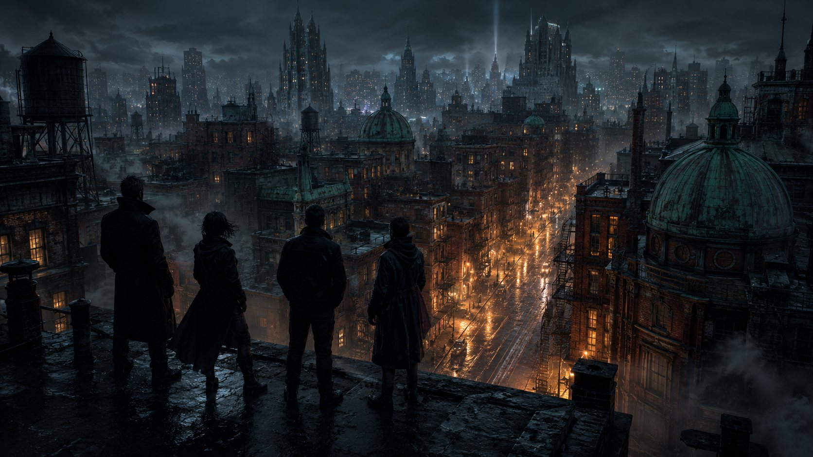
1 · One press in Worlds. A round refresh press at the right of the Worlds header, using the existing shelf control, with a minimum 44 × 44 target and tooltip/accessibility label Check for updates (P13a). The same header is used on phone, tablet and desktop (P13e, P13f); keyboard activation works. No new menu or screen.
2 · Immediate, once. Pressing checks the hosted catalogue even inside the daily interval. An automatic check already in progress finishes first; repeated presses never start overlapping requests. Automatic checks retain P12’s daily interval. Manual checks do not download a world.
3 · While checking. The icon becomes a spinner and the press is disabled. A short live status under the header says Checking for updates (P13b). Existing worlds, scrolling and playback remain available.
4 · The result. On success the status says Checked, and every screen uses the newest catalogue immediately. Existing update tags and Update presses indicate which worlds have a newer edition (P13c). Checked means the list was fetched, not that installed worlds were replaced. An older remote list never replaces the newer local or shipped list.
5 · Retry. Offline, a timeout, a malformed list or a save failure says Couldn’t check for updates (P13d). Keep the current list and re-enable the same press for immediate retry; never show Checked for a failed request.
6 · Reading and access. Use existing theme and type tokens. Status wraps at large text sizes and is announced as a live region; controls remain reachable at 200% text, in light and dark themes. No captions under cards, layout redesign or automatic world downloads.
The daily background check and explicit manual check share the same catalogue cache.
22 October 2026 · Approved · 6 frames. Asked: when a world’s audiobook is updated in the Studio, does the Player see it and offer the download? Today only a package added from a file does (P10a); a world installed from Arke’s list never shows a newer edition, because the list ships with the app and names no edition. The sample: The Undersong installed at its 20 October edition, Arke’s list naming the 22 October one, made by the Studio’s Export → Arke Player (Studio 233). Approved as drawn by the owner on 22 October 2026, with calls 8 and 9.
1 · Arke’s list, fetched. The list of Arke’s worlds (P9 rule 1) is also kept at one Arke address and fetched over HTTPS when Worlds or a world’s page opens, at most once a day. Each entry names its edition: the label, and its package’s address, length and SHA-256, pinned as before. The list in the app stays as the floor, so Worlds shows offline and never goes back to an older list. A world’s guide alone (P11 rule 3) is fetched again when its pin changes.
2 · A newer edition. An installed world whose edition in the list is not the one installed (P10 rule 2) has an update. Its card on Worlds carries Update (P12a). A world added from a file has no entry in the list: a newer package of it is added from a file, as P10a.
3 · On the world’s page. Update · 228 MB under the logline, full width, as Install (P12b); the meta line keeps the installed edition, Installed · 20 Oct 2026 · 182 MB. Under the hero, New edition with its date and size, and Space as the difference (+46 MB of 41 GB free).
4 · Updating. As installing (P9 rule 4): the press becomes its progress in place, Downloading · 120 MB of 228 MB, then Checking, and Cancel (P12c); Downloads lists it under Worlds, Updating · 53% (P12e). The installed edition stays and plays until the new one is checked in full, then gives way to it as P10 rule 3: the old files go once the new are in place, and places are kept by chapter. While something of the world plays, the swap waits for it to stop.
5 · Updated. The meta line takes the new edition, Installed · 22 Oct 2026 · 228 MB, and the press and the New edition rows go (P12d). Continue keeps its card and its place; the productions show what the new edition holds.
6 · Pressed, not automatic. An update downloads only when Update is pressed: a world is the person’s (P9 rule 6), and an edition can change what they are partway through. Wi-Fi only (P6b) applies to it as to a download.
7 · Refused in one clause. As P9e (P12f): Needs 46 MB · 20 MB free, No connection, Download stopped, 1 file does not match, with the world and the new edition’s date, then Try again and Close. The installed edition is untouched.
8 · Words. Labels only: Update, New edition, Space, Downloading, Checking, Updating, Cancel, Try again, Close; dates, sizes and counts as data.
Try next: “an update while its audiobook plays” · “a world gone from Arke’s list” · “Update from Home’s Continue”
22 October 2026 · Approved · 9 frames. Asked: a Worlds section where people explore worlds and their productions, and read about the characters and some of the lore, starting with the worlds Arke makes available. Approved as drawn by the owner on 22 October 2026; to be specified in SPEC-059. The guide is what a world’s author makes public in the Studio (Studio 234).
Tide-caller. She hears the verse under the harbour and pulls the water where it needs to go. She has paid for it: her left ear is done, and she knows the right is next.
Salt-crusted braids, pale grey eyes, oilskin coat with a bioluminescent thread at the collar.
A watchtower of black stone at the harbour mouth, ringed by a rail worn smooth by two hundred years of gripping hands. Lamps burn green-white.
Bells under the water on the worst nights. The rail hums a fifth below the wind.
Beneath the harbour lies a drowned god, and it is still singing. The song is slow — one verse a season — and the harbour’s luck rises and falls with the verse. Most people have never heard it. Everyone has felt it.
Tide-caller. She hears the verse under the harbour and pulls the water where it needs to go. She has paid for it: her left ear is done, and she knows the right is next.
Salt-crusted braids, pale grey eyes, oilskin coat with a bioluminescent thread at the collar.
1 · Worlds is a tab. The tabs become five, Home · Worlds · Library · Downloads · You, Worlds second (P1 rule 3 amended); on a Fold, the rail (P11i). Worlds (P11a) lists In Library, then Available, as cards 358 × 190, each meta line its productions, characters and, before install, size. It takes the place of P9b’s Available page: first open’s Install a world opens it, and Home keeps its Available section (P9g).
2 · Arke’s worlds, not yet a directory. The worlds are the ones Arke makes available: a list that ships with the app, each package pinned by its SHA-256 (P9 rule 1), growing with each update as more worlds are made. A directory anyone publishes to needs the Arke cloud — accounts, hosting, moderation, takedown, rights and ratings — and is not drawn.
3 · A world’s guide. Characters, Places and Lore, as the author made them public. The guide is small and pinned in the list on its own, so a world can be explored before it is installed (P11b): it is fetched when the page first opens and kept. Installing brings it in the package. Nothing in it is a world’s source (P1 rule 1): no sheets, notes, prompts or open questions.
4 · A world’s page. The hero; then the productions — Install and Inside before (P11b), the groups after (P11c); then Characters as cards 120 wide, 4:5, name and role; Places as P1d’s 160 tiles; Lore as rows, the kind over the title. Each head carries its count. A section with nothing public is not drawn. A character with no portrait shows initials.
5 · A character. P11d: the portrait as the hero, the name, role · world, and Voice with its length — a line from a production in their voice, chosen by the author. Then the sections made public, in the author’s order and words, under their own headings (Essence, Appearance), and With: the characters and places linked, each opening its page.
6 · A place, a lore entry. A place (P11e): the picture, the name, Place · world, its public sections, and Here, the characters linked. Lore (P11f): rows under the chips All · Lore · Rules · Timeline; an entry (P11g) is its kind, its title in text-3xl, the author’s text, and With.
7 · What waits for a chapter. Each character, place, lore entry and section is public from the start or after a chapter of a production. Until this phone’s place in that production — read or heard — passes the chapter, it is drawn as After Chapter 6 with the hidden mark and Reveal: a row in a list, a card with no portrait among the characters, a row in place of a section. Reveal asks once (P11h): the chapter, the production and where you are, then Reveal or Not now. What is revealed or reached stays shown on this phone.
8 · On a Fold. The rail; characters 160 wide, places 280; lore in two columns (P11i).
9 · Words. Labels only: Worlds, In Library, Available, Characters, Places, Lore, Rules, Timeline, Voice, With, Here, Reveal, Not now, After Chapter N; counts, sizes and lengths as data. The sections’ headings and texts are the author’s.
Try next: “a world with no guide” · “a world’s guide offline, never fetched” · “a character in two productions”
21 October 2026 · Approved · 2 frames. SPEC-058 R-21. A world package added from a file (P2c–P2f), such as one made by the Studio’s Export → Arke Player (Studio 233), may be of a world the library already holds.
1 · Another edition. When the package is of a world in Library and its edition differs, Ready (P2e) becomes Replace (P10a): the package’s line as ever (made 21 Oct 2026 · 1 production · 228 MB), Inside, then In Library with the installed edition’s date and size, and Space as the difference (+46 MB of 41 GB free). The presses are Replace and Cancel. Newer or older, the two dates say which; nothing warns.
2 · What an edition is. Two packages are the same edition when their edition labels and every file’s SHA-256 agree. Anything else is another edition, so a package made again under the same label is still offered as Replace.
3 · Replacing keeps the places. The new edition is checked in full first (P2d). The old files go only once the new are in place, so Cancel or a refusal leaves Library as it was. Places are kept by chapter: a narration’s place by its chapter id and time, a book’s by its chapter where that chapter still exists, else the production’s start. Continue keeps its card; the world’s card, page and size follow the new edition.
4 · The same edition. Refused in one clause (P10b): Already in Library, with the world and its edition under it, then Open (the world’s page) and Close. The copy is deleted.
5 · Words. Labels only: Replace, Cancel, In Library, Space, Already in Library, Open, Close; dates and sizes as data.
Try next: “a newer edition on Available after an app update” · “an older edition” · “Replace while its audiobook plays”
20 October 2026 · Approved · 8 frames. Asked: let the Player show worlds a person can install; one exists, The Undersong. Drawn with no account, beside P8’s states, and with the demo’s real contents. World import was left out of the MVP (ArkePlayer docs/mvp.md), so whether this is built in it is the owner’s call.
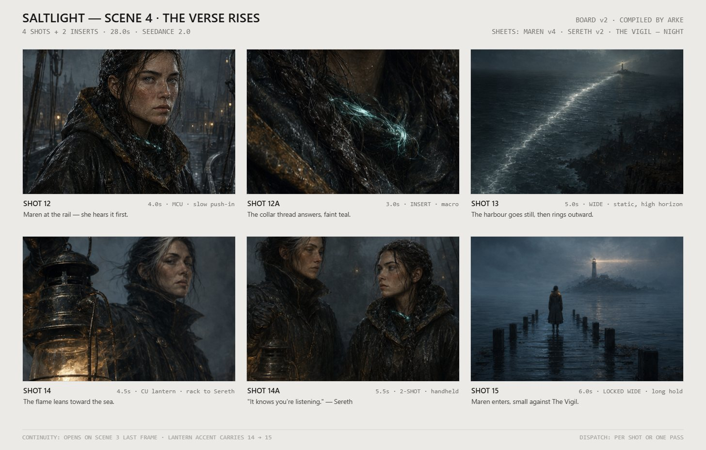
1 · What can be installed. Worlds Arke publishes for anyone, needing no account: today one, The Undersong. The list ships with the app — each world’s name, logline, key art, size, and its package’s address and SHA-256, pinned as the Studio pins its Sample world — so it shows offline and needs no Arke cloud. A new world arrives with an update.
2 · Where they are. First open gains a second press, Install a world, under Add a file (P9a). It opens Available, a page of world cards, 358 × 190, each with its count and size (P9b). Home ends with Available, after Continue and Added, its cards 240 × 135 (P9g); with nothing added it sits under Add a file. A world leaves Available when it is installed and returns when it is removed. With nothing left to install, the press, the page and the section are absent.
3 · A world before it is installed. P1d’s hero with one meta line (1 production · 386 MB), the logline, and Install · 386 MB full width, 50 high (P9c). Under it Inside, each production as P2e’s rows — the thumbnail, the title, the kind and length — then Space, the size against what is free. The productions are rows, not tiles: nothing opens before it is installed.
4 · Installing. The press becomes its progress in place (P9d): the line, Downloading · 162 MB of 386 MB, then Checking · 140 of 262 files, and Cancel, which deletes what has come. Free space is checked before the first byte. Every file is checked against its manifest, as a package from a file is (P2 rule 6), and nothing plays before the check passes. Leaving the page does not stop it: Home’s card and Downloads show Installing · 42% with the line. It downloads on any network; Wi-Fi only (P6b) applies when it returns.
5 · Refused in one clause. As P2f, a sheet over the page (P9e): No connection, Download stopped, Needs 386 MB · 210 MB free, 3 files do not match, with the world and its size under it, then Try again and Close. Nothing partial is kept.
6 · Installed. The page becomes P1d’s (P9f): the meta line Installed · 1 production · 386 MB, the productions grouped by what a person does, and ⋯ with Details and Remove. A world with one production shows it at the full width, 358, not as a 160 tile. The world joins Library above the files, under All (P7b), and Home’s Worlds. It is the person’s, like a package from a file: it needs no account and goes only by Remove, which deletes it and its places and returns it to Available.
7 · The Undersong. The demo is The Undersong as Arke publishes it: The Ledger of Nights, sixteen chapters with the narration of twelve, about 3 h 49 m: the Studio’s own EPUB and M4B, published on 20 October 2026. It is one production under Listen, its kind line Audiobook · Book (P1 rule 6): Read opens all sixteen chapters, and Chapters lists the twelve that are narrated (P5 rule 2). The video pilot is unfinished and is not in it. The Player installs it as a world package (ADR 0005), never as the Studio’s Sample world — the 1.6 GB editable world the Studio downloads (ArkeStudio #1949) — which is a world’s source (P1 rule 1). Its package is 182 MB; the frames’ sizes and file counts are samples.
8 · On a Fold. The rail; the key art across the page, 400 high; the words and Install, 320 wide, at the left; Inside and Space in a column 640 wide (P9h).
9 · Words. Labels only: Install a world, Available, Install, Inside, Space, Downloading, Checking, Installing, Installed, Cancel, Try again, Close, No connection, Download stopped; counts, sizes and times as data.
Try next: “Available with several worlds” · “a world installing, seen from Home” · “Details from ⋯”
20 October 2026 · Drawn for the MVP · 6 frames. The MVP (ArkePlayer docs/mvp.md) plays the person’s own audio, books and films with no account and no Arke worlds. P1–P7 always drew an account and worlds beside files; these are the states without them. Drawn at the owner’s word to start M0, and built on without waiting, as the owner asked.
1 · Before an account exists. No control that needs an account is drawn: not Sign in with Arke on first open (P1a), not the picture in Home’s head (P1b), not Shared in Library (P1c), not the account in You (P6b). Each is absent, never disabled. When sign-in arrives those frames return as drawn.
2 · First open. The wordmark over the app’s own picture — bundled with it, since no world exists yet — and one press, Add a file, full width under the thumb (P8a). It opens the system’s file picker directly, several files at once: with only one way in, the Add sheet (P2c) would be a press that leads to one more press, so it returns when it has a second (Paste a link). + in Library and Add a file on an empty shelf do the same. What was picked is read on the sheet of P7a.
3 · Nothing added. Home, Library and Downloads keep their titles and show one state line, Nothing added, over Add a file (P8b). The tabs stay. No picture, no sentence.
4 · Library with files only. With no worlds and no shares there is no All · Shared · Added. The chips are what a person does — All · Listen · Read · Watch, as a world’s groups are — each shown only when a file of its kind exists, and no chips at all when only one kind does (P8c). Rows as P7b: cover or first page at 52, the title, the format with the author, pages or length, and the size; newest first; + in the head; ⋯ holds Details and Remove.
5 · Home with files. Continue as P1 rule 4, then Added: the newest files, at most 10, as 120 squares with the title and the format; a press opens the file in its player (P8d). New and Worlds return with shares and worlds. With files and nothing in progress, Added stands alone.
6 · On a Fold. The rail, and Library’s rows in two columns (P8e).
7 · You before an account. Playback: Captions; Storage: On this phone with its size; About: Version and Licences (P8f). Text, Slow push, Autoplay next, Wi-Fi only and Adult content return with the Arke audiobooks, micro dramas, shares and adult-marked productions they belong to.
8 · Words. Labels only: Add a file, Nothing added, All, Listen, Read, Watch, Added, Continue, Playback, Captions, Storage, On this phone, About, Version, Licences; sizes, lengths and pages as data.
Try next: “Details from ⋯” · “Library with one kind only” · “Downloads with files only”
20 October 2026 · Approved · 4 frames. Asked after P1–P6 were drawn: let people add the formats the industry already uses, such as PDF and EPUB. They open in the players already drawn; a PDF or a comic gets a page viewer. P1a and P2c now say Add a file.
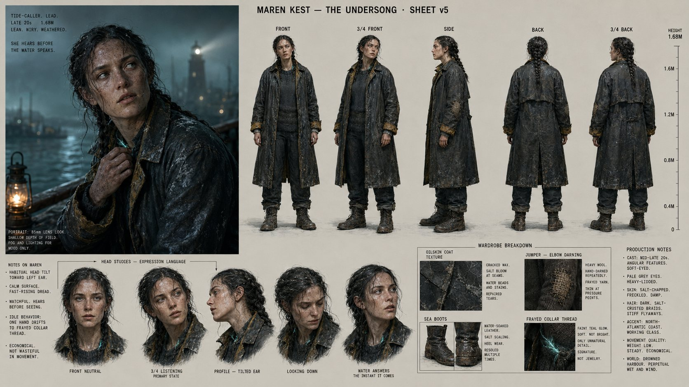
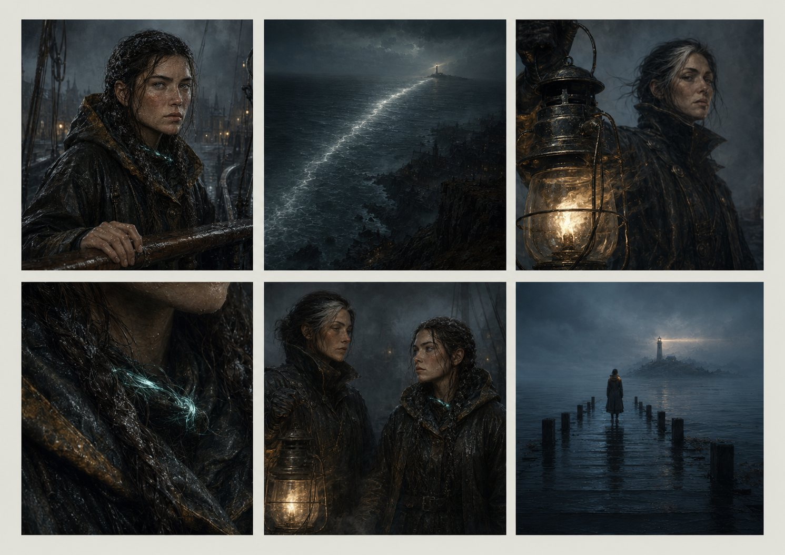
1 · What a phone already has. Add a file takes, beside an Arke package: EPUB for books; PDF and CBZ for documents, comics and boards; M4B, M4A and MP3 for audiobooks and audio; MP4 and MOV for video, with an SRT or VTT of the same name picked beside it as its captions. The Add sheet lists them as one line of data (P2c). Several files can be chosen at once (P7a).
2 · Each opens in a player already drawn. EPUB in the reader (P5e) with its own contents and Aa; PDF and CBZ in the page viewer (P7c); audio in the audiobook player (P7d), an M4B’s chapter markers as its Chapters, else one chapter a file; video in the film player (P3a, P3b), its captions from the file’s own text tracks or its SRT or VTT. The Player shows what the file carries and invents nothing: no Text, no Slow push, no picture beyond the file’s own cover.
3 · Read before it is added. A standard file has no manifest to check against, so the Player opens each one before adding it and reads its format, title, author, cover, length or page count and chapters. Each picked file is a row with what was read (P7a), or a refusal in one clause: Protected file for DRM — store-locked EPUB, PDF and audio are never opened — Can’t open this file, Not a supported format. The press counts what will be added (Add 3); a refused file is left out, never half-added.
4 · Files are not worlds. Library’s Added holds added worlds and then Files, newest first: the cover or first page, the title, the format with the author, pages or length, and the size (P7b). A file has no page of its own: a press opens it in its player, and ⋯ holds Details and Remove. Files join Continue on Home and Added in Downloads (P6a). They need no account, are never uploaded, and go only by Remove.
5 · A PDF or a comic. Pages fit the width on the shelves’ theme, scroll as one column and pinch to zoom; a double tap fits the page again (P7c). The top holds ⌄, the title, Contents when the file has an outline, and ⋯; the foot the page, 3 of 24, with its line. The place is kept on the device. A CBZ reads its pictures in name order as pages.
6 · An audio file. The file’s cover, square and centred on the overlay colours, the title and author under it; a file with no cover shows its title on a plain tile (P7d). The transport, speed, sleep and lock screen are the audiobook’s (P5a); Chapters lists the file’s markers.
7 · Not opened. MOBI and AZW (Kindle’s own formats), DOCX and plain text are refused as Not a supported format. Converting a file is not the Player’s work.
Try next: “a video with its SRT” · “Details from ⋯” · “a CBZ comic open”
20 October 2026 · Approved · 6 frames. What is on the phone, the device’s settings, the one gate a share can carry, and the Player open on a Fold7.
1 · Downloads. A shared production plays from the cloud until it is downloaded; an added package is always on the phone. The tab opens on the space Arke Player takes against the rest and what is free, then Shared downloads — each with its size and a downloaded mark, Downloading · 42% with its line, or Waiting for Wi-Fi — then Added packages (P6a). ⋯ on a row removes it. Downloads wait for Wi-Fi while Wi-Fi only is on.
2 · Offline. Without a network the head of Home says Offline (P6d). What is on the phone plays as ever; a shared production not downloaded is greyed with offline on its kind line and does not open. Places made offline are kept and sent on the next connection.
3 · You. The account — picture, name, address, Account ↗ (Studio 151) and Sign out — then Playback: Captions, Text, Slow push, Autoplay next; Downloads: Wi-Fi only, Storage; Content: Adult content; then About (P6b), in Studio 149’s row grammar. Every setting is this device’s.
4 · Adult content. Off by default. A production its owner marked adult shows blurred, with 18+, and does not open; a press offers Adult content is off with I am 18 or older · Turn on and Not now (P6c). Turning it on is a personal choice made once on this device and undone in You (Studio 154).
5 · On a Fold. At 600 wide and over the tabs become an 88-wide rail, Continue cards are 420 wide and the shelves widen (P6e). A player keeps the picture the page — 16:9 across the top at the full width — with the words and the transport centred under it at 640, the words at text-2xl (P6f). Bands: under 600 a phone; 600 to 1099 a Fold or a tablet.
6 · Implementation boundary. Nothing here is built. The Arke cloud — accounts, shares, streaming — does not exist yet: the Studio’s account seam answers Arke cloud is not available yet. The first build can ship packages, the players and downloads, and take shares when the cloud arrives. The world package and the share model are owed to the specs (SPEC-048, SPEC-025) before either is built.
Try next: “Storage open” · “a download failed” · “the Fold folded mid-play”
20 October 2026 · Approved · 5 frames. Studio 186’s audiobook player with 211’s Slow push and 212’s two lines, an audio drama with its transcript, and the book an edition carries.
The key had no teeth. Odile turned it over twice in the lamplight before she understood that it was not meant for a lock at all.
Below the window the harbour lay flat and black. The bells had stopped an hour ago, and the silence they left behind was louder than any of them.
“You found it,” Bray said from the door. He did not come in.
“It found me.” She closed her hand around it. “Where is the tenth door?”
He looked at the water for a long time before he answered.
1 · An audiobook is 186’s player. The picture of the moment fills the top 62% (P5a); Slow push sits under the title as a labelled switch 44 high (Studio 211); Text shows only the current phrase, at most two lines at text-lg, centred above the transport (Studio 212). The transport: previous chapter, back 15, play or pause 64, forward 30, next chapter; under it the speed, the sleep choice and Text. Chapters and ⋯ at the top (Studio 186).
2 · Chapters. A glass sheet (P5b): each chapter’s number, title and length, a check when finished, the playing one with its line of progress, a downloaded mark. A chapter the edition does not hold is not listed: a publication carries only chapters read whole (186).
3 · Speed and sleep. One sheet (P5c): speed 0.8× · 1.0× · 1.2× · 1.5× · 2×, the pitch kept (186); sleep Off, End of chapter, 15 min, 30 min, 60 min. Both kept on the device.
4 · An audio drama. The episode’s picture as a 16:9 card at the top, then the edition’s transcript (Studio 230): the speaker in label caps over the line, the line being heard in full ink and the rest at 46%, a sound cue in brackets and italics (P5d). The transcript follows the audio; a press on a line plays from it. The transport is the audiobook’s, with Transcript and Episodes.
5 · A book. The edition’s EPUB on the shelves’ theme (P5e): ⌄, the chapter, Aa (size; Paper, Sepia, Night) and Contents at the top; the text; at the foot the page in the chapter (12 of 30) with its line, and Listen when the edition has narration. Listen opens that chapter in the audiobook at its kept place, else its start. Reading and listening keep separate places (Studio 224).
6 · The phone’s controls. Audio plays with the screen locked; the lock screen and headset drive it, with the picture of the moment as the artwork (186).
Try next: “an audio drama’s episodes” · “Aa open” · “the lock screen”
20 October 2026 · Approved · 5 frames. Studio 156’s interactive player and 174’s visual novel, on a phone and inside the Player.
1 · An interactive movie is 156’s player. On a phone the choices stack full width where the thumb is, 58 high, in authored order, the first in focus, Replay scene under them; captions and the route sit at the top (P4a, Studio 156i). Nothing counts down: untimed is the only built behaviour (156).
2 · The route. A glass sheet over the picture (P4b): each scene watched with its 96 × 54 still, the choice taken between them with Choose again, and Start over. No endings found, no percentages (156).
3 · An ending is a title. ENDING, the ending’s title in text-4xl, the route as stills with the choices taken in one line, then Start again and Back to last choice (P4c, 156e on a phone).
4 · A visual novel is 174’s player. The box above the home indicator, 12 in from each edge, the speaker’s tab and the line in text-lg; a tap anywhere moves on; Auto, Log and ⋯ (Route, Start over) at the top (P4d, Studio 174g). Log is a glass sheet of the scene’s lines up to now, newest last, each with its play (P4e, 174e).
5 · Where you are. A place is kept on the device, per routing version (156f): a scene and a time, or a scene and a beat. On a production’s page Continue names the scene; Start over is in ⋯.
Try next: “three and four choices on a phone” · “a visual novel at 16:9 on a phone” · “the route of a long story”
20 October 2026 · Approved · 5 frames. The Player hosts the players the Studio already draws; a film and a micro drama get the transport a phone needs.
1 · One player, three homes. The players are Studio 156’s, 174’s and 186’s: the same framework-free modules the Studio previews with and the packages carry (156: one player, two homes). The Player runs those modules and adds only its close (⌄, back to where the player was opened) and the phone’s media session around them — lock screen and headset controls, background audio, picture in picture, casting. What plays in a browser from a package plays the same in the Player.
2 · A film. The picture is the page (156): letterboxed, never cropped, on the overlay colours. Held upright, the picture sits in the middle with the chrome over two scrims (P3a); turned, it fills the height (P3b). A film’s scrubber runs across the whole film, since a film has a length. The transport: Captions, back 10, play or pause 64, forward 10, full screen; the time as 54:40 / 1:32:40; Cast at the top. The chrome rests after 2.5s while playing and never while paused.
3 · A micro drama is a feed. One episode a screen, 9:16, full bleed (P3c). Swipe up for the next episode, down for the one before; a tap pauses. The top holds ⌄ and the production over Episode 13; a column at the right edge holds Episodes, Captions and More, 44 across with their names; a 3-high scrubber sits above the home indicator, the episode’s number and title over it. At an episode’s end the next begins (Autoplay next, on by default, in You).
4 · Episodes. A glass sheet over the picture, which keeps playing (P3d): the count, 1–20 · 21–40, and the episodes as numbered tiles five across, 48 high — seen ones dimmed, the current one inverted. A press plays that episode from its kept place, else its start.
5 · Captions. A sheet of the publication’s text tracks by their label, Off first, the chosen one checked, then Size S · M · L (P3e). The choice is kept on the device and applies to every production that carries that language; one without it plays with captions off.
Try next: “a series with seasons” · “casting to a TV” · “a micro drama paused”
20 October 2026 · Approved · 7 frames. A shared world arrives as a link; a package arrives as a file. Both end as a world in Library.
1 · A share opens from its link. A share link opens the Player (an app link; without the Player, its store page). The sheet Shared with you shows the world’s key art and name, who shared it — picture and name — and the count, then Open; signed out, Sign in with Arke ↗ and Not now (P2a). Signed in to an account the share was not made for, the sheet says Not shared with this account and offers Switch account.
2 · Sign-in is the browser’s. As Studio 151: no password field in the Player. The press hands off to the system’s browser sheet, the presses give way to waiting for the browser and Cancel (P2b), and the Player keeps the session. Arke account is the only account it knows.
3 · What a share is. A share gives one account the productions its owner chose from a world, as publications, under the world’s name, key art and logline. The owner can add productions — they appear under New — and can stop sharing. Who and what is set in the Studio, in a Share sheet this master does not draw. A shared production streams from the Arke cloud until it is downloaded (P6a).
4 · A share that ends. The world stays in Library, greyed, with No longer shared and Remove on its card (P2g). Nothing in it opens, and its downloads are deleted the next time the Player reaches the cloud. Its places are kept until Remove, so a share made again resumes where it was.
5 · Adding a file. + in Library, and Add a file on first open, open Add, a sheet of two — Choose files (the system’s picker, several at once) and Paste a link (https only) — and what it takes as one line of data (P2c). A file also arrives from the system’s Open in and Share menus. Accepted: the standard formats of P7, and a world package — a ZIP holding the world’s name, logline and key art and one or more publications, each with its own publication.json — or one publication’s ZIP. The world package is a proposal; its format is owed to SPEC-048 before it is built.
6 · Checked before it is shown. Free space is checked first: a package larger than what is free is refused before it is copied. The Player then copies the file into its own storage and checks every asset’s byte length and SHA-256 against its manifest: Checking, the file’s name and size, a bar, 212 of 418 files, Cancel (P2d). Nothing in a package plays before the check passes.
7 · Ready. The summary is what the manifests say (P2e): the world’s picture and name, made 12 Oct 2026 · 3 productions · 1.4 GB, each production with its kind and size under Inside, the space it takes against what is free, and Add to library. Closing deletes the copy.
8 · Refused in one clause. A refusal is its title (P2f): 3 files do not match, Made with a newer Arke (with Update), Not an Arke package, Needs 1.4 GB · 0.9 GB free. Nothing partial is added and the copy is deleted. Choose another file and Close.
9 · A package is the person’s. An added world is removed only by Remove, needs no account and is never uploaded to one.
Try next: “Not shared with this account” · “a package arriving from Open in” · “Made with a newer Arke”
20 October 2026 · Approved · 6 frames. Asked: a phone app, Arke Player, that plays what is made in Arke — productions from worlds shared through Arke, and Arke packages a person adds — reusing the players already drawn in the Studio master. The Studio stays where things are made; the Player is where they are watched, heard, read and played.
1 · What it plays. Arke Player is a phone app for publications: films, micro dramas, interactive movies, visual novels, audiobooks, audio dramas and books. A publication is a frozen edition with its own manifest (SPEC-048, publication.json). The Player never opens a world’s source: no sheets, prompts, takes, settings or unpublished work reach it, and nothing in it edits, generates or spends.
2 · Two ways in, no gate. Things arrive as a share through an Arke account (P2a) or as a file added from the phone — an Arke package, or a book, a PDF, audio or video in a standard format (P2c, P7). Neither needs the other: a file plays with no account. First open (P1a) is the wordmark over a world’s picture and two presses, Sign in with Arke ↗ and Add a file; no tour, no sentence.
3 · Four tabs. Home, Library, Downloads, You, in a bar 84 high (56 pressable, the rest the home indicator’s), icon over label, the current tab in full ink. A page pushed from a tab keeps the bar. On a Fold the bar becomes an 88-wide rail (P6e).
4 · Home is for going on. Three sections, each absent when empty (P1b): Continue — what is in progress, last played first, at most 8, cards 300 × 169; New — productions added to a shared world since this device last looked, the world on the kind line; Worlds — every world, 240 × 135. A Continue card names the kind, the title and where you are as data (Chapter 7 · 19 min left, 38 min left, Episode 13, The drowned quarter) over a 3-high line of progress. An interactive or visual novel card names its scene and draws no line, because a route has no length (Studio 156). The round press resumes in the player; the card opens the production. Finished things leave Continue.
5 · Library is every world. A card per world, 358 × 190, under the chips All · Shared · Added, with + (Add a file) in the head (P1c). A shared world’s meta line is who shared it and the count (Helen Marsh · 6 productions); an added one’s is Added · 3 productions · 1.4 GB.
6 · A world’s page. The world’s key art as the hero, 300 high under a back press and ⋯, its name in text-3xl, one meta line, and its logline in at most two lines — the author’s words as published, or nothing (P1d). Then its productions grouped by what a person does: Watch (film, micro drama), Play (interactive movie, visual novel), Listen (audiobook, audio drama), Read (a book with no narration). A group with nothing in it is not drawn. A book with its narration is one production, under Listen, its kind line Audiobook · Book. Tiles are 160 wide, 16:9, with title, kind and length, and the line of progress.
7 · A production’s page. Studio 199’s show page on a phone (P1e, P1f): the backdrop, the title in text-3xl, one meta line (Audiobook · Book · 9 h 40 m · Read by Odile’s voice), the primary full width and 50 high — Play, or Continue · Chapter 7 · 12:04 when this device holds a place — then one row: the second way in (Read, for a book with narration), the download with its size, and ⋯ (Start over, Remove download, Details). Under it what it is made of: Chapters or Episodes as rows (a 128 thumbnail with its listened line, the title, the length, a downloaded mark); a micro drama’s episodes as a 4-across grid of 9:16 thumbnails. Cast is drawn only when the publication carries credits.
8 · The dock. Audio that plays while its player is closed docks above the tabs (P1d): 60 high, inset 8, a 2-high progress line on its top edge, the picture of the moment, the title over where, back 15 and play or pause; a press opens the player (Studio 199). Video does not dock: closing its player pauses it and keeps its place, and the phone’s own picture in picture is offered where the system has it.
9 · Theme. The shelves — Home, Library, Downloads, You and the sheets over them — follow the phone’s light or dark. A hero, a picture card and every player are on the media overlay colours whatever the theme (Studio 156, 199).
10 · Words. Labels only: Home, Library, Downloads, You, Continue, New, Worlds, Watch, Play, Listen, Read, Chapters, Episodes, and counts, sizes and times as data. No sentence under a title (Studio 137).
Try next: “Home with nothing yet” · “a world with one production” · “Details from ⋯”